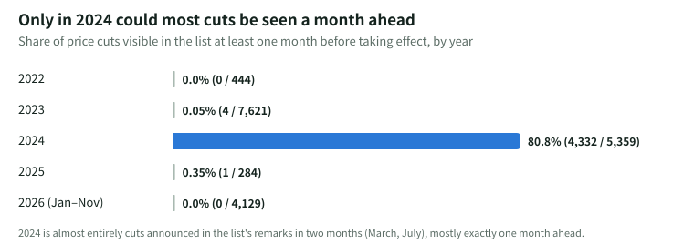
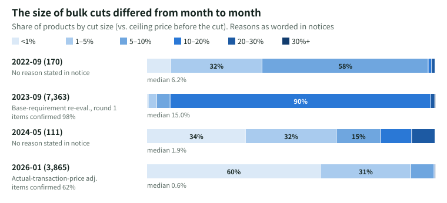

Only in 2024 could most price cuts be seen a month ahead
Pharmacies reading the reimbursement list mostly learn of cuts in the month they take effect, and a fifth of the January 2026 cuts were 1 won
Second edition (2026-11-27), rewritten to start from what pharmacists say. The first edition (2026-11-24) centred on how often announcements in the list come true. Analyses and figures are reused; lead time, size of cuts and a match against government notices are new.
One number changed: products that left the list after a court injunction (10 price-cut announcements, 13 planned suspensions) were counted as “not carried out” in the first edition and are now left out, because there is nothing left to judge. Price cuts went from 99.7% to 99.96% and planned suspensions from 89.3% to 100.0%.
The whole series is in the series overview; demand forecasting is in the demand report.
Summary
What pharmacists say mostly holds, but not every year.
| What pharmacists say | What the data show |
|---|---|
| “We learn of price cuts only days before” | True. In the list, most cuts first appear in the month they take effect; government notices and association guidance came 4–13 days ahead. 31.6% of 2022–2025 cuts were visible a month or more ahead, almost all in two months of 2024 |
| “1-won cuts are a loss we just absorb” | True in January 2026. 19.6% of that month’s government bulk cuts were exactly 1 won and 39.9% were 5 won or less. Across 2022–2025, 5 won or less was 10.2%, so it varies by year |
| What an alert builder asks | What the data show |
|---|---|
| Can announced cuts be trusted? | Yes. Nearly all (99.96%) cuts announced in the list’s remarks column were carried out, but only a third of price changes are announced there |
| Which cuts were large and which small? | The documented reasons differed. The September 2023 base-requirement re-evaluation cuts were mostly 10–20%; the January 2026 actual-transaction-price cuts were mostly under 1% |
1. Whose problem, and who can help
The page takes the view of those who could ease pharmacy burdens with ordering, stock and return information (distributors, pharmacy support services). Pharmacy pain points are sorted by the path a drug takes through a pharmacy: procuring (A), holding stock (B), dispensing (C), earning (D). Stage B is expected to worsen fastest as listed drugs are re-evaluated from 2027, and it is the stage public data cover best.
What a pharmacist said (trade press): cuts become known only days ahead, so checking stock against them to claim the price difference from suppliers is given up, and 1-won cuts are absorbed as a loss. Two of the reasons behind this can be measured with public data: no time (when a cut first becomes visible) and small amounts (size of cuts). A third, shrinking compensation and return terms from manufacturers and wholesalers, is not in public data.
Cuts are grouped as: cuts announced in advance in the list’s remarks column; government bulk cuts (months when 50 or more ingredients changed price without a note); and other cuts without a note.
Not in the data: pharmacy purchases and stock, product sales, wholesale flows, compensation and return terms, planned delisting dates. Pharmacy-level losses are not computed.
2. When can a cut be known?

- Pooled, 31.6% (4,337 of 13,708) were visible a month or more ahead, but almost all of it is announced cuts in March and July 2024. 4,334 of the 4,337 first appeared in the previous month’s list (29–31 days ahead).
- Government bulk cuts and other cuts without a note all first appeared in the list of the month they took effect. For an alert built on the list, only 7 cuts appeared after taking effect: the problem is lateness, not misses.
- 9,370 of 14,041 product price changes (66.7%) had no note in the remarks.
- Outside the list, bulk cuts were known 4–13 days ahead: notice No. 2022-199 (7 days), Korean Hospital Association letter (6), notice No. 2023-166 (4), notice No. 2025-218 (8), Korean Pharmaceutical Association item table (13; shared 2025-12-19, estimated). The same table listed voluntary cuts effective 44 days later (2026-02). Only one pharmacy-route document is available (2026).
3. How small are cuts?
- 19.6% of the 2026-01 bulk cuts were exactly 1 won and 39.9% were 5 won or less; 718 of the 759 1-won cuts are on the actual-transaction-price item table.
- Across 2022–2025, 5 won or less was 10.2%.
- Cuts visible a month ahead were smaller: 27.2% were 5 won or less, vs 2.2% for other cuts.
- Won amounts are per unit (one tablet, one mL); the drop per box is larger, and package sizes mix, so percentages are shown in section 5.
4. Can announced cuts be trusted?
The exception is a court injunction: a company contesting a decision can have a court suspend it, and the announced cut or suspension does not take effect meanwhile.
| Announcement | Products | Carried out, among those that can be judged | On the planned date | Median lead time |
|---|---|---|---|---|
| Price cut (remarks) | 4,683 | 99.96% | 98.5% | 30 days |
| New listing | 342 | 100.0% | 100.0% | 8 days |
| Planned suspension | 203 | 100.0% | 35.8% | 23 days |
- “Can be judged” leaves out announcements still held by an injunction and products that left the list after one.
- Of 151 price-cut notes held by injunctions, followed to 2026-11, 75.0% of the 88 with an outcome came true as announced, 12.5% at a different amount and 12.5% not; the median time to outcome was 27 months. These are a few companies’ cases.
5. Which cuts were large, and which small?

- 2023-09, base-requirement re-evaluation (round 1): 7,231 of 7,363 bulk cuts (98.2%) are on the re-evaluation cut list; 92.0% of them were 10–20% (median 15.0%).
- 2026-01, actual-transaction-price adjustment: 2,405 of 3,865 (62.2%) are on the item table; 67.9% of them were under 1% (median 0.47%). The other 1,441 took effect under the same notice but are not on the item table.
- 2022-09 and 2024-05: no reason stated in the notices (medians 6.2% and 1.9%).
- Reasons are taken only from document wording. Whether the 2027 re-evaluation will resemble either pattern cannot be told from these data.
6. Implications
Untested suggestions for alerts: cuts announced in the remarks as one-month-ahead alerts; bulk cuts tracked through notice and association schedules (1–2 weeks ahead) with item tables turned into checklists; a monthly list-to-list comparison for other cuts; injunction cases flagged as possibly years from an outcome. Showing the size of each cut lets pharmacies decide which items are worth checking. Pharmacy-level expected losses need the pharmacy’s own stock records.
Checks and limits
Of 11,509 bulk cuts in the four months, 11,460 (99.6%) matched the notices’ change tables on product code and before/after price. Note classification matched 30 hand-labelled cases in 83.3%. Limits: the case and the ranking of pain points rest mainly on trade press and pharmacist surveys; lead time is measured in months; 37.3% of the 2026-01 bulk cuts have no item-level reason; some outside-list dates are estimates; injunction outcomes come from a few companies. Products under flexible pricing contracts (from 2026-06) had no cuts. No savings, settlement or incentive amounts are computed.
Sources: HIRA reimbursement lists; MOHW notices No. 2022-199, 2023-166, 2024-67, 2025-218; Korean Hospital Association letters (2022, 2023); Korean Pharmaceutical Association guidance (2025-12); delisting reasons from MFDS drug information and Cashdoc; flexible contracts from HIRA guidance and MOHW notices.